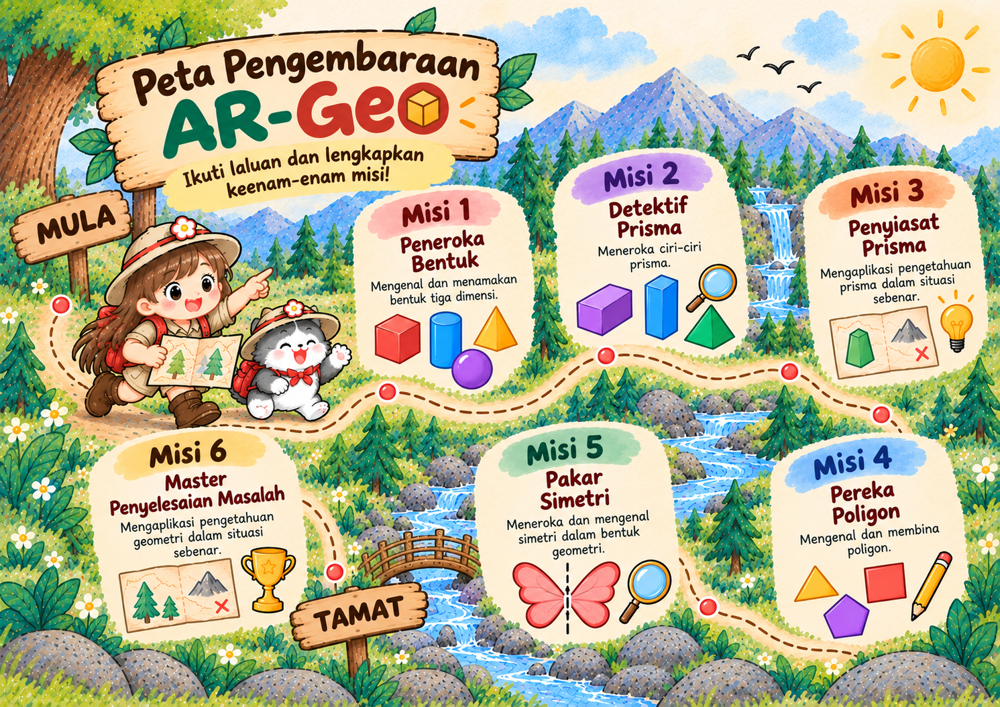

Aina dan Comel menemui tiga prisma. Cari prisma segi empat sama.
Comel menemui tiga peti! Pilih peti, baca petunjuk, kemudian teka prisma yang tersembunyi.
Pilih satu peti untuk bermula.
📱 Buka Makmal AR dan Model 3D ↗
Comel mahu kamu menyiasat tiga bentuk. Pilih bentuk dan putarkannya untuk melihat dari sudut yang berbeza.
Putar model 3D menggunakan butang atau seret objek dengan jari/tetikus. Ini paparan 3D interaktif; AR kamera dibuka melalui Makmal AR pada peranti yang serasi.
Pautan AR disimpan pada pelayar/peranti ini sahaja. Pautan perlu diuji pada peranti murid.
Soalan penyiasatan: Antara tiga bentuk ini, yang manakah mempunyai dua tapak berbentuk segi tiga?
Comel menjumpai tiga fail penyiasatan! Putar objek 3D dan kira ciri bentuk untuk mengumpul tiga cap detektif.
🔍 Cap dikumpul: 0 / 3
Seret model untuk melihat semua permukaan. *Garis tepi* ialah garis pertemuan dua permukaan, manakala *bucu* ialah titik pertemuan garis tepi.
Kamu berjaya menyelesaikan ketiga-tiga fail penyiasatan.
Aina dan Comel telah tiba! Di sini, kita akan membina aktiviti mencari dan mengenal tiga jenis prisma berdasarkan modul AR-Geo.
Cabaran Misi 1 akan dimasukkan pada Langkah 2.
Aina dan Comel tiba di Kampung Bentuk! Bantu penduduk memilih objek harian berdasarkan bentuk 3D.
Hebat! Kamu berjaya menghubungkan bentuk prisma dengan objek di sekeliling.
Comel kehilangan pelan Taman Poligon! Bantu Aina membina bentuk dengan menyambungkan titik pada papan lukisan.
Tekan titik pada grid mengikut turutan. Tekan titik pertama sekali lagi untuk menutup bentuk.
Syabas! Kamu berjaya membina segi tiga, segi empat tepat dan segi lima.
Aina menemui Cermin Ajaib! Bahagian kiri corak sudah siap. Sentuh petak di sebelah kanan supaya kedua-dua bahagian menjadi imej cermin.
Garis putus-putus di tengah ialah paksi simetri. Petak berwarna di kiri ialah petunjuk.
Hebat! Kamu berjaya menghasilkan tiga corak simetri.
Aina dan Comel tiba di Kampung Geometri. Gunakan pengetahuan tentang prisma, poligon dan simetri untuk membantu penduduk kampung!
Syabas! Kamu berjaya melengkapkan keenam-enam misi pengembaraan Aina dan Comel.
🏅 Lencana Akhir: Master Penyelesaian Masalah
Pilih cabaran yang hendak dimainkan. Selesaikan semua cabaran untuk mendapatkan lencana.
🔒 Lencana masih berkunci.
Kamu berjaya menyelesaikan semua 6 misi pengembaraan AR-Geo!
Aina dan Comel bangga dengan usaha kamu. Teruskan meneroka dunia geometri!
Selesaikan aktiviti hingga berjaya. Kemudian kembali ke menu untuk merekodkan kemajuan.

Hai, pengembara kecil! Aina dan Comel sudah bersedia. Siapakah nama kamu?
Nama kamu akan muncul pada sijil pengembaraan.
Gunakan nama panggilan sahaja. Nama disimpan pada pelayar peranti ini, bukan dihantar ke internet.
Dengan bangganya dianugerahkan kepada
kerana berjaya menyelesaikan keenam-enam misi AR-Geo
Teruskan meneroka dunia geometri bersama Aina dan Comel.